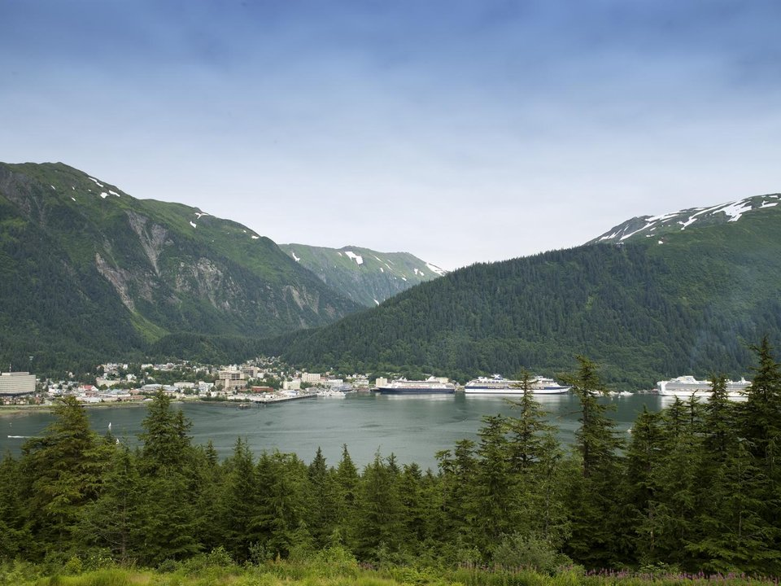

Downtown · Boutique inn
Silverbow Inn
A small inn in a historic downtown building.
Official details for Silverbow InnA glacier beside the runway.
Juneau is the only U.S. state capital with no road connection to the rest of the country, tucked between the mountains and Gastineau Channel. Mendenhall Glacier pours down to a lake just a few miles from the airport. Land at Juneau International, ride the tram up Mount Roberts, go whale watching for humpbacks, take a day trip into Tracy Arm and eat king crab on the waterfront.

Time illustration: direct distance at 150 KTAS plus 15 minutes for departure and arrival, matching the discovery page. Use ForeFlight for your actual flight plan.
PAJN, Juneau International, is a towered airport at 25 feet with an 8,857-foot runway and a float pond (08W/26W, 4,800 feet), about 15 minutes from downtown and 10 from Mendenhall Glacier.
Juneau International Airport, Juneau, AK
Terrain rises steeply around the channel; low ceilings and rain are common. Brief the local VFR routes. No live fuel price is shown.
Southeast Alaska flying: frequent rain, low ceilings and fog in narrow channels, mountains rising straight from the water, and float traffic in the harbors. Carry survival gear and use the FAA weather cameras. From the lower 48 this is an expedition, not a weekend: the usual route is the Alaska Highway through Canada (customs, eAPIS and Canadian survival-equipment rules), roughly a week each way. Most visitors are Alaska-based pilots, or fly commercially and book local air taxis and flightseeing.
Juneau, AK · airport 907-789-7821
Water lanes: 08W/26W, 4,800 × 150 ft, on the airport.
Floatplanes also operate from the downtown harbor; expect cruise ships and boats in the channel.
Water landing rules, conditions and docking change; call the operator and check the chart supplement before you go.
Rates and availability need travel dates. Summer books early.
A small inn in a historic downtown building.
Official details for Silverbow InnHotels and lodges in Juneau.
Travel Juneau for More places to stayReserve weekend dinners.
King crab legs and bisque by the cruise docks.
Official details for Tracy’s King Crab ShackRestaurants downtown.
Travel Juneau for More restaurantsWeather can change hourly; layer up.
This prototype links to the local visitor site. It does not yet match events to your travel dates.
Humpbacks feeding near Juneau.
Travel Juneau for Whale seasonDowntown is busiest.
Travel Juneau for Cruise seasonA local ski area across the channel.
Travel Juneau for Eaglecrest skiingCheck the local calendar when choosing a weekend, and confirm dates and tickets with the organizer.
A sample Juneau weekend. Written for Alaska-based pilots and visitors already in Alaska. No bookings or availability confirmed.
Land at PAJN mid-morning.
Mendenhall Glacier and Nugget Falls.
King crab downtown, then back to the airport.
Land at PAJN, subject to weather and your actual flight plan.
Mendenhall Glacier and Nugget Falls.
Dinner downtown.
Whale watching.
The Mount Roberts tram.
King crab on the waterfront.
A walk through downtown.
Allow time at the airport or dock.
Alaska weather changes fast; keep a margin and an alternate.
Whale watching.
The Mount Roberts tram.
Dinner downtown.
These details make the difference between an appealing list and a usable getaway.
Lodging, then a whale-watching trip.
About 200 nm up the Inside Passage.
Rain is normal; keep plans flexible.
May to September.
Picks and links reviewed by WingAway Weekends. Hours, prices, menus and availability change often, so confirm directly with each place before booking. Spotted something out of date, or have a favorite we missed? Email us at hello@wingawayweekends.com.
WingAway Weekends helps you discover the destination. Use ForeFlight and current official aviation information for route, performance, weather, NOTAMs and preflight decisions. Flight planning and PIC responsibility stay with the pilot.
One fly-in weekend, a Fly to Lunch pick and the newest guides, about once a month.
Free. Unsubscribe anytime.